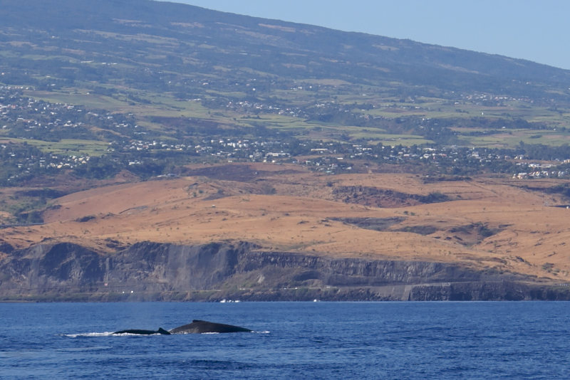
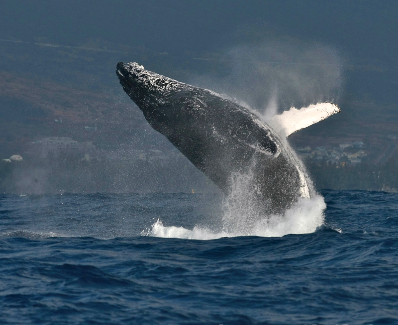
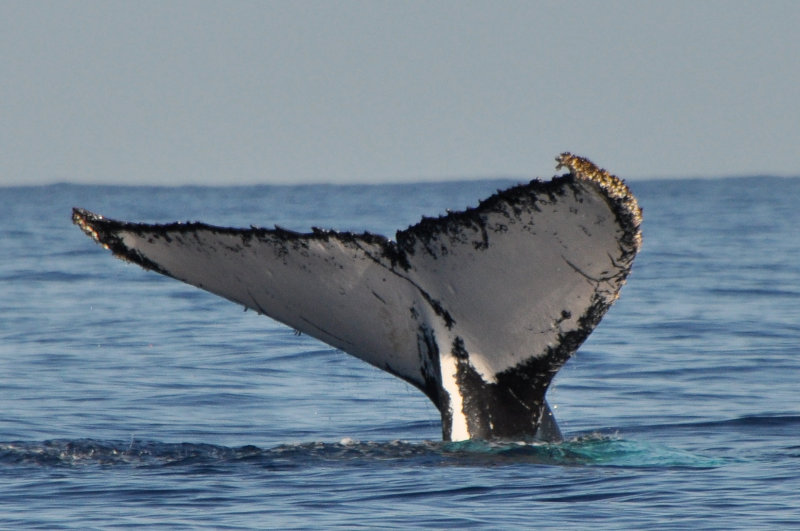
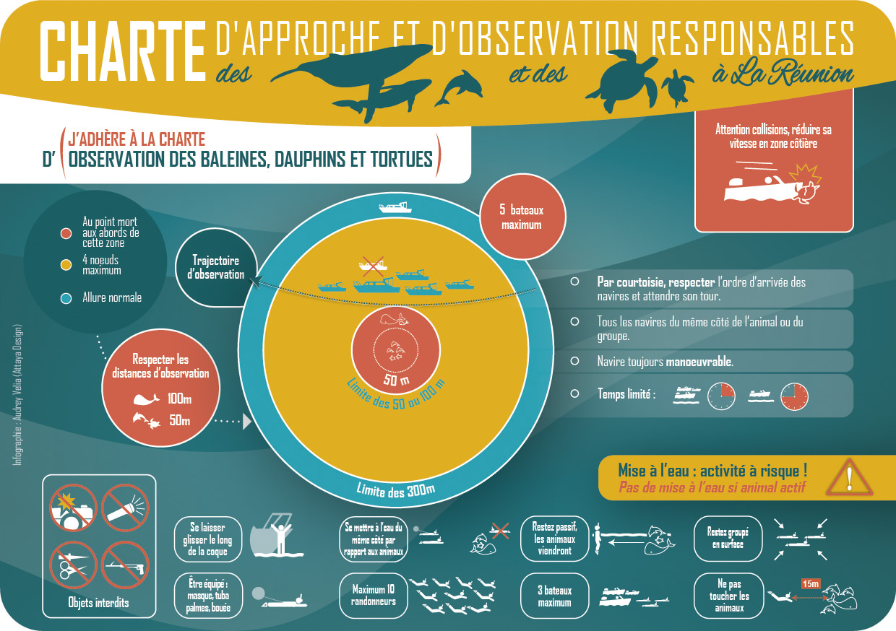
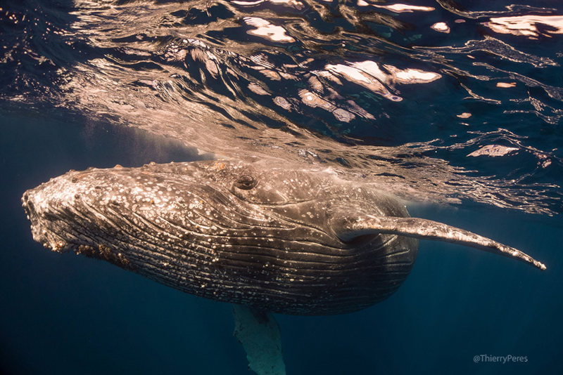

Megaptera novaeangliae, une baleine à bosse au cap la-Houssaye. (phpto: B.navez)
Outre les requins dont on a vu que la présence était préoccupante, les eaux qui entourent la Réunion sont riches de grands animaux marins: tortues, dauphins, baleines que l’on peut observer à la bonne saison de juin à octobre. Les baleines à bosse viennent dans les eaux de la Réunion, à proximité du lagon dans l’ouest de l’île, pour y mettre bas et élever leur baleineau. Elle viennent de l’Antarctique où elles se sont gavées de krill pendant l’été austral et remonte vers le nord de l’Océan Indien en hiver pour y mettre bas. Certaines d’entre elles ne font aue passer au large de la Réunion et continuent leur voyage. Pendant cette période, les baleines sont paisibles et joviales. Il n’est pas rare d’observer des battements de nageoires et même des sauts hors de l’eau de cétacé impressionnant qui retombe dans un grand splatch. Il est aussi possible d’entendre le chant caractéristique des mâles. D’autres baleines ont été observées comme la baleine franche, la baleine de Cuvier, la baleine de Minke, la baleine à bec et le rorqual commun mais c’est la baleine à bosse qui est la plus observée parce que plus nombreuse et plus expressive.
Quand leurs baleineaux sont assez grand, ils repartent vers le sud, dans les eaux froides de l'Antarctique.
Ce voyage des baleines du sud vers le nord de l’océan Indien pour se reproduire a toujours existé mais il semblerait que les baleines choisissent de plus en plus l’île de la Réunion pour leur séjour de villégiature loin de la banquise. L’association Globice dont le but est d’observer et de préserver les grands cétacés qui approchent de l’île de la Réunion a été fondé en 2001. Elle participe à la meilleur connaissance des espèces et collecte même des données sur les tortues et les oiseaux qu’elle partage avec d’autres organisations. Cette association a relevé que depuis 2007, les baleines semblent venir en plus grand nombre chaque hiver. En 2017, pas moins de cent quatre-vingt baleines ont été recensées et 2018 promet d’être encore plus riche. Déjà 38 baleines recensées en juin alors que la meilleure année en 2015, on en avait dénombré 10.

Grand saut hors de l'eau (Photo: Mario Lopes Ferreira)
Si les baleines sont plus nombreuses, les rencontres avec l’homme le sont encore plus. Ces baleines qui évoluent toujours dans le même secteur, entre Boucan-Canot et Saint-Pierre, a créé un engouement qui va au delà des espérances pour le développement du tourisme. Des dizaines de sociétés proposent aujourd’hui aux touristes de rencontrer les grands cétacés en bateau ou même directement dans l’eau. Seulement, si les baleines à bosse sont dérangés par cette nouvelle activité humaine, elles ne reviendront plus à la Réunion et chercheront un autre lieu plus paisible. C’est pourquoi en 2009 a été mis au point une charte recommandant des méthodes d’approche prudentes des baleines.

La nageoire caudale d'une baleine à bosse (Photo: Annerun974)
La baleine est un animal sauvage. La charte a pour but de lui présenter l’activité humaine d’observation sur un angle non prédateur. Pour résumer, les bateaux doivent se présenter de côté et faire route avec elles, ralentir à partir de 300m de l’animal et ne pas s’approcher de plus de 100m, ne pas couper le moteur à l’arrêt pour signaler sa présence. Le nageurs ne doivent pas s’approcher de plus de 15m des animaux qui peuvent ensuite décider de s’approcher, ou pas. En cas d’affluence, le nombre de bateaux dans la zone des 300m est limité à 5 et le nombre de baigneurs à 10. Les bateaux comme les nageurs doivent restés groupés pour éviter un effet d’encerclement qui pourrait faire paniquer le cétacé. Ces règles sont affichés et expliqués aux touristes mais il arrive qu’elles ne soient pas toujours suivies malgré les risques d’accidents que cela implique. Dans ce cas, les autorités ont les moyens de sanctionner les contrevenants depuis un arrêté ministériel du 1er juillet 2011 qui liste les mammifères marins qui sont protégés dans les eaux françaises.
Les baleines à bosse ont été moins nombreuses qu’attendues en 2015 et 2016 et les spécialistes qui emmenaient les touristes ont dû trouver de nouveaux animaux à observer. Cela a souvent été les dauphins. En 2017 la charte a été d’approche a été élargie aux dauphins et aux tortues qui sont aussi de grands animaux marins sauvages et qui subissent la présence répété de la marine de plaisance et des nombreux observateurs pas toujours bien informés.

L’enjeu est important. Si les mammifères marins sont trop dérangés au large de la Réunion, ils iront s’établir ailleurs là où l’activité humaine les dérange moins. Les baleines sont aussi observés à Maurice, Rodrigues aux Comores et à Sainte-Marie une petite île à l’est de Madagascar et il semble que l’activité humaine est moindre dans ces îles là. La mise à l’eau avec les grands mammifères n’est pratiqué, à ma connaissance qu'à l’île de la Réunion.
Les touristes sont bien souvent les moins bien placés pour connaître la charte. Ils arrivent, veulent faire des expériences intéressantes avant de repartir sans souvent prendre le temps d’apprendre à mériter ces expériences. Il y a un intérêt économique à vouloir répondre à leur demandes mais il n’est pas souhaitable que n’importe qui s’improvise accompagnateur dans l'observation des cétacés. La SYPRAL (Syndicat des Professionnels des activités de loisirs sur l’île de la Réunion) en concertations avec les associations d’observations et la DAEL ( Direction de l’Environnement, de l’Aménagement et du Logement) ont mis en place un label pour que les touristes puissent choisir leur accompagnateur en connaissance.
Le label s’appelle O²CR pour « Observation Certifiée Responsable des Cétacés à la Réunion ». Il a été mis en phase de test en 2014 et est pleinement utilisé aujourd’hui. Il est délivré aux sociétés qui en font la demande, remplissent le cahier des charges et passent divers contrôles. Les pouvoirs publics ne sont pas engagés dans l’attribution du label mais les contrôles de police peuvent aussi être pratiqués dans le cadre de la loi contre le harcèlement des animaux marins nageant dans les eaux françaises.

Vue sous marine d'une baleine à bosse avec ses strilles caracteristiques sous la gorge (photo : Peres Thierry)
L’année 2018 a donc été une très bonne année et les sorties en mer se soldaient presque toujours par une rencontre avec un grand cétacé. Les touristes et les curieux ont été contents et nombreux. Nombre d’entre eux ont partagés leur émerveillement sur Internet avec photos et vidéos à l’appui.
Baleines à La Réunion par Yves Guénot.
Mais fin août les associations Globice et CEDTM (Centre d’Etude et de Découverte des Tortues Marines) ont communiqué un phénomène inquiétant repris sur Zinfos974. Les baleines viennent maintenant au contact des baigneurs qui les observent. Vu leur taille et leur poid le risque d’accident est élevé. C’est pourquoi la presse s’en fait l’écho en diffusant les mises en garde des associations avec pour rappelle la fameuse charte d’approche.
L’histoire ne dit pas si les baleines ont commencé à en avoir marre de voir passer ces petits animaux en combinaison noire dans leur environnement vital ou si elles voulaient juste jouer. Il faut rappeler que les baleines observées sont souvent des mères avec leur petit baleineau et que comme toute mère, si elle sent son baleineau menacé, va se montrer agressive.
En septembre l’association CEDTM donne de plus de détails sur son site. Le phénomène d’approche est le fait d’une baleine qui a été baptisée Mareva. L’association explique comment reconnaître Mareva et conseille de ne pas se mettre à l’eau avec elle. Pour que le message soit bien compris. Elle diffuse en même temps une vidéo qualifiée anonyme et prise d’un drone avec d’autres vues prises dans l’eau. C’est une vidéo impressionnante où la baleine fauche les nageurs avec sa nageoire pectorale droite.